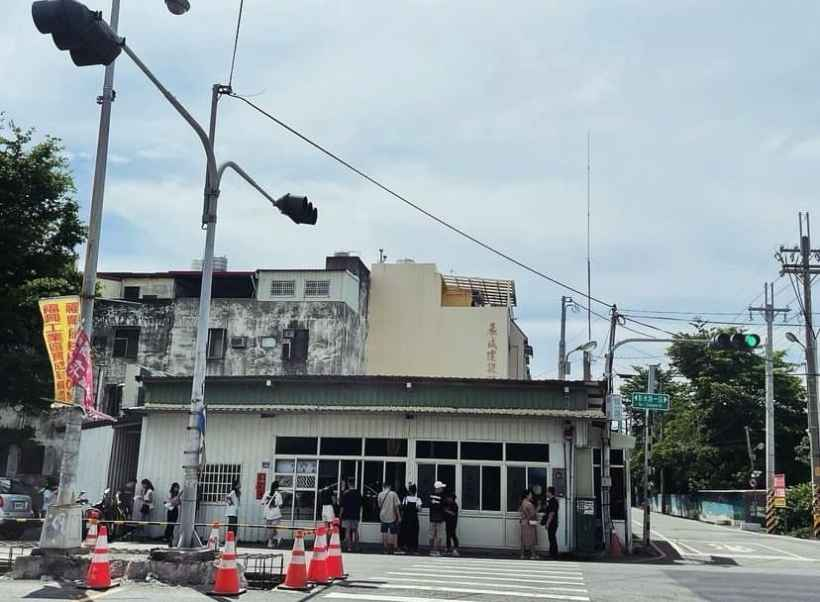
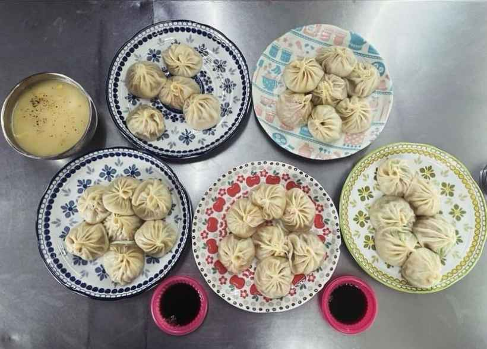
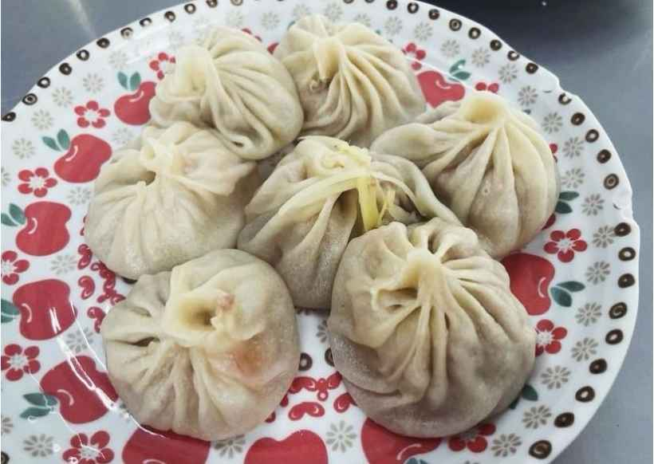
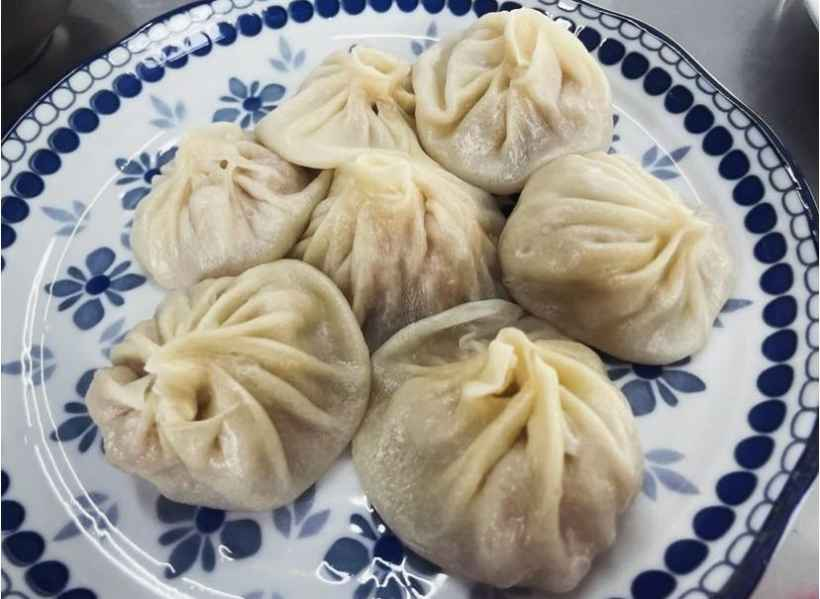
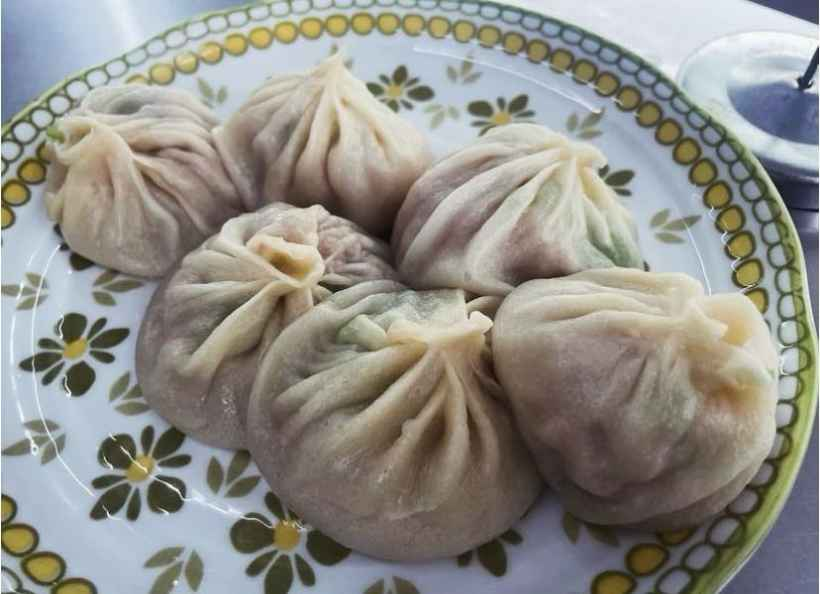
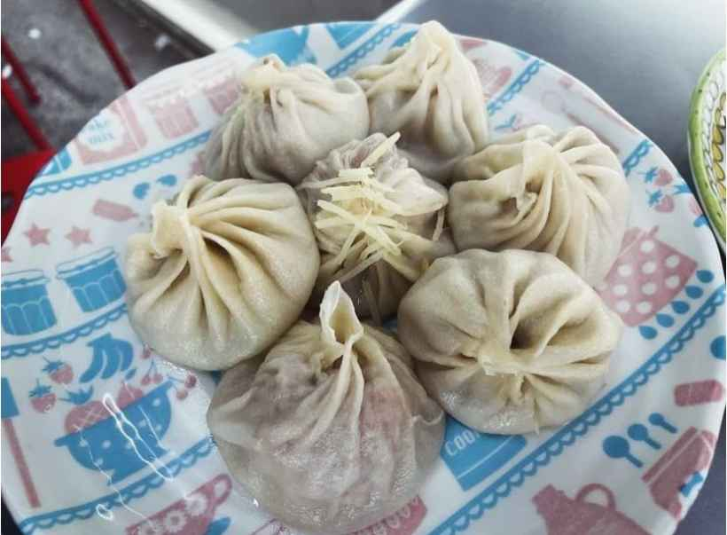
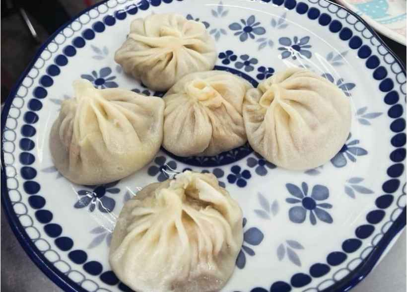
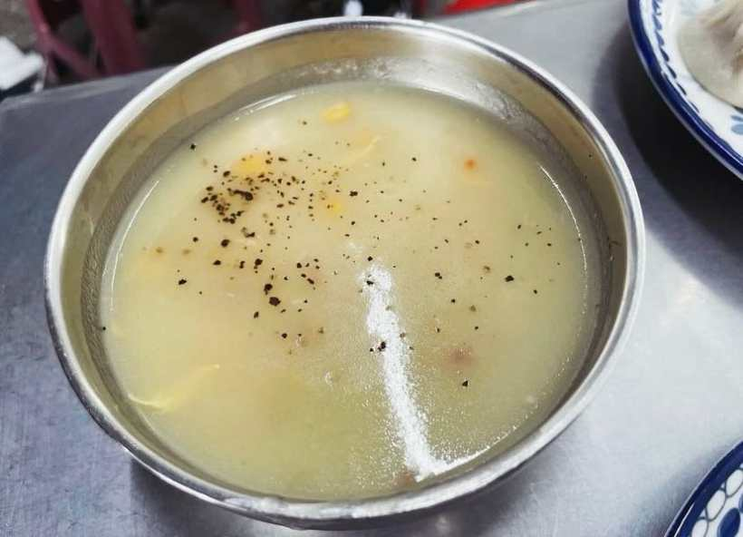

嗨囉🤪
我們是Hungryforest🌳
這次的主題是
彰化湯包第二彈！

《秀水湯包》
🌟彰化最排隊的湯包🌟
📍 彰化縣秀水鄉彰水路一段590號
對湯包有研究的人，絕對不可能沒聽過秀水湯包！我們這次早上10.開始排隊，店前已經有大量的人潮，隨著離中午時間越接近，人潮越多，除了內用，也可以外帶，但是都要等很久🥲我們排了大概1.5小時，才入座，外頭的太陽很大，沒有等候的座位，說真的，有點難熬🙈
到達餐廳後，要先進去抽號碼牌，拿菜單，牆上會有兩個燈號，第一個燈號是付款燈號，等到你時，可以進去點餐付款，接著又是永無止盡的等待，如果是內用，付款完，有位子時，店員會出來叫好入座～外帶的話就是等燈號！
如果要拿秀水湯包和民族湯包比較，我們一致認為，當然還是秀水湯包大勝利，但排隊時間也是它的兩倍，大家要自己斟酌😮💨那秀水湯包吃起來確實不輸鼎泰豐，比較大顆，也比較便宜一點，皮的厚度剛好，湯汁也很多，超讚！我覺得缺點就是，鼎泰豐的等待期也冷氣和座位，痛苦值會下降一點😅
我們這次真的吃了很多口味

鮮蝦湯包（130元/7顆）：我們心目中排行第一的口味！必點！蝦很大隻，會瞬間覺得排隊值得😋

鮮肉湯包（70元/7顆）：很經典平常的口味，但是它排第二名！！！比想像的還要好吃，也算是必點！

絲瓜蝦仁湯包（120元/6顆）：用料很實在，也蠻好吃的，但我自己覺得，蝦仁和絲瓜的味道，有點沒有融合在一起，可是沒有不好吃，就是有點像，絲瓜和蝦仁，各自在講單口相聲🙈

干貝湯包（120元/7顆）：干貝吃起來很有感，但我覺得干貝更適合單吃，放到湯包裡有點沒有那麼搭，但也是好吃啦！

蟹老闆湯包（180元/5顆）：最貴的一個品項，蟹味是真的很重，但我們自己沒有很愛🙈🙈🙈

湯品（30元）：我們這次喝到的是玉米濃湯，不確定會不會更換，是濃的濃湯，不差，但那天太熱了，喝起來快樂感不高🤣

豆漿（20元）：建議大家要點杯飲料，尤其是夏天的時候，不然真的會吃得滿頭大汗🥵它的豆漿不錯，不會喝起來像水一樣淡🙂
這次吃起來的心得就是，真的好吃，沒有浪得虛名，但排隊真的好辛苦😫